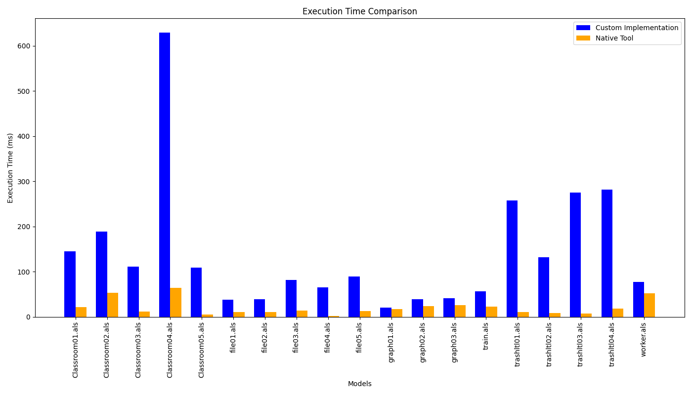
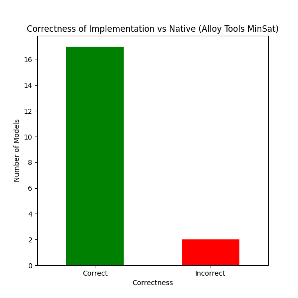

We performed several benchmarks focused on 2 points, execution time and correctness, for these tests We used 20 als models which are included in als\_models folder on resources.
The first graph compares the execution times between the custom implementation and the native tool for each model. You can observe how each pair of bars represent a model, allowing you to compare directly the performance of both implementations.
The second graph shows the correctness of the custom implementation compared to the native tool's results. A model's result is considered "correct" if the outcomes from both implementations match. The bars represent the count of models where the custom implementation was correct versus incorrect.
